StrongMaximumTest¶
-
class
StrongMaximumTest(*args)¶ Strong Maximum Test.
Refer to Strong Maximum Test.
- Available constructors:
StrongMaximumTest(event, designPoint, importanceLevel, accuracyLevel, confidenceLevel)
StrongMaximumTest(event, designPoint, importanceLevel, accuracyLevel, pointNumber)
Parameters: - event :
StandardEvent Failure event
 defining in the standard space (U-space).
defining in the standard space (U-space).- designPoint : sequence of float
Design point in the standard space resulting from the optimization algorithm.
- importanceLevel : float, 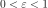
Importance level.
- accuracyLevel : float, 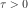
Accuracy level. It is recommanded to take 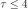.
- confidenceLevel : positive float, 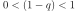
Confidence level.
- pointNumber : int, 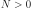
Number of points used to perform the Strong Maximum Test, evaluated by the limit state function.
See also
Notes
The Strong Maximum Test helps to evaluate the quality of the design point 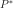 resulting from the optimization algorithm launched for example by the
Analyticalclass or its derived classesFORMandSORM. It checks whether the design point computed is :- the true design point, which means a global maximum point,
- a strong design point, which means that there is no other local maximum located on the event boundary and which likelihood is slightly inferior to the design point one.
The Strong Maximum Test will sample the sphere centered on the origin of the standard space and of radius : 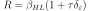 with , 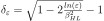 and 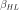 the Hasofer-Lind reliability index.
The number
 of the simulations sampling the sphere of radius
of the simulations sampling the sphere of radius  is determined to ensure that the test detects with a probability greater than
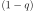 any point of outside the design point vicinity
which contribution to
is determined to ensure that the test detects with a probability greater than
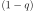 any point of outside the design point vicinity
which contribution to  is not negligeable (i.e. which density value
in the U-space is greater than
is not negligeable (i.e. which density value
in the U-space is greater than  times the density value at
the design point).
times the density value at
the design point).Examples
>>> import openturns as ot >>> myFunction = ot.SymbolicFunction(['E', 'F', 'L', 'I'], ['-F*L^3/(3*E*I)']) >>> myDistribution = ot.Normal([50.0, 1.0, 10.0, 5.0], [1.0]*4, ot.IdentityMatrix(4)) >>> vect = ot.RandomVector(myDistribution) >>> output = ot.CompositeRandomVector(myFunction, vect) >>> myEvent = ot.Event(output, ot.Less(), -3.0) >>> # FORM analyse to get the design point >>> myAlgo = ot.FORM(ot.AbdoRackwitz(), myEvent, [50.0, 1.0, 10.0, 5.0]) >>> myAlgo.run() >>> FORMresult = myAlgo.getResult() >>> designPoint = FORMresult.getStandardSpaceDesignPoint() >>> # Strong Max Test >>> myStandardEvent = ot.StandardEvent(myEvent) >>> myTest = ot.StrongMaximumTest(myStandardEvent, designPoint, 0.15, 3, 0.99) >>> myTest.run()
Attributes: thisownThe membership flag
Methods
getAccuracyLevel()Accessor to the accuracy level. getClassName()Accessor to the object’s name. getConfidenceLevel()Accessor to the confidence level. getDeltaEpsilon()Accessor to the parameter 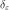. getDesignPointVicinity()Accessor to the design point vinicity. getEvent()Accessor to the event in the standard space. getFarDesignPointVerifyingEventPoints()Accessor to the points verifying the event and far of the design point. getFarDesignPointVerifyingEventValues()Accessor to values of the limit state function. getFarDesignPointViolatingEventPoints()Accessor to the points not verifying the event and far of the design point. getFarDesignPointViolatingEventValues()Accessor to values of the limit state function. getId()Accessor to the object’s id. getImportanceLevel()Accessor to the importance level. getName()Accessor to the object’s name. getNearDesignPointVerifyingEventPoints()Accessor to the points verifying the event and near of the design point. getNearDesignPointVerifyingEventValues()Accessor to values of the limit state function. getNearDesignPointViolatingEventPoints()Accessor to the points not verifying the event and near of the design point. getNearDesignPointViolatingEventValues()Accessor to values of the limit state function. getPointNumber()Accessor to the number of points. getShadowedId()Accessor to the object’s shadowed id. getStandardSpaceDesignPoint()Accessor to the design point in the standard space. getVisibility()Accessor to the object’s visibility state. hasName()Test if the object is named. hasVisibleName()Test if the object has a distinguishable name. run()Perform the Strong Maximum Test. setName(name)Accessor to the object’s name. setShadowedId(id)Accessor to the object’s shadowed id. setVisibility(visible)Accessor to the object’s visibility state. -
__init__(*args)¶ Initialize self. See help(type(self)) for accurate signature.
-
getAccuracyLevel()¶ Accessor to the accuracy level.
Returns: - accuracy : positive float
Accuracy level 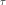.
-
getClassName()¶ Accessor to the object’s name.
Returns: - class_name : str
The object class name (object.__class__.__name__).
-
getConfidenceLevel()¶ Accessor to the confidence level.
Returns: - level : positive float
Confidence level .
-
getDeltaEpsilon()¶ Accessor to the parameter .
Returns: - delta_epsilon : float
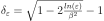.
-
getDesignPointVicinity()¶ Accessor to the design point vinicity.
Returns: - vicinity : float, 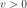
Design point vinicity 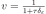.
-
getEvent()¶ Accessor to the event in the standard space.
Returns: - event :
StandardEvent Failure event
in the standard space on which is based the
Strong Maximum Test.
- event :
-
getFarDesignPointVerifyingEventPoints()¶ Accessor to the points verifying the event and far of the design point.
Returns: - points :
Sample The points of the discretized sphere which are out of the vicinity of the standard design point and which verify the event.
- points :
-
getFarDesignPointVerifyingEventValues()¶ Accessor to values of the limit state function.
Returns: - values :
Sample The values of the limit state function on the points of the discretized sphere which are out of the vicinity of the standard design point and which verify the event.
- values :
-
getFarDesignPointViolatingEventPoints()¶ Accessor to the points not verifying the event and far of the design point.
Returns: - points :
Sample The points of the discretized sphere which are out of the vicinity of the standard design point and which don’t verify the event.
- points :
-
getFarDesignPointViolatingEventValues()¶ Accessor to values of the limit state function.
Returns: - values :
Sample The values of the limit state function on the points of the discretized sphere which are out of the vicinity of the standard design point and which don’t verify the event.
- values :
-
getId()¶ Accessor to the object’s id.
Returns: - id : int
Internal unique identifier.
-
getImportanceLevel()¶ Accessor to the importance level.
Returns: - level : float
Importance level
.
-
getName()¶ Accessor to the object’s name.
Returns: - name : str
The name of the object.
-
getNearDesignPointVerifyingEventPoints()¶ Accessor to the points verifying the event and near of the design point.
Returns: - points :
Sample The points of the discretized sphere which are inside the vicinity of the standard design point and which verify the event.
- points :
-
getNearDesignPointVerifyingEventValues()¶ Accessor to values of the limit state function.
Returns: - values :
Sample The values of the limit state function on the points of the discretized sphere which are inside the vicinity of the standard design point and which verify the event.
- values :
-
getNearDesignPointViolatingEventPoints()¶ Accessor to the points not verifying the event and near of the design point.
Returns: - point :
Sample The points of the discretized sphere which are out of the vicinity of the standard design point and which don’t verify the event.
- point :
-
getNearDesignPointViolatingEventValues()¶ Accessor to values of the limit state function.
Returns: - values :
Sample The values of the limit state function on the points of the discretized sphere which are inside the vicinity of the standard design point and which don’t verify the event.
- values :
-
getPointNumber()¶ Accessor to the number of points.
Returns: - number : int,
Number of points used to perform the Strong Maximum Test, evaluated by the limit state function.
-
getShadowedId()¶ Accessor to the object’s shadowed id.
Returns: - id : int
Internal unique identifier.
-
getStandardSpaceDesignPoint()¶ Accessor to the design point in the standard space.
Returns: - point :
Point Design point in the standard space.
- point :
-
getVisibility()¶ Accessor to the object’s visibility state.
Returns: - visible : bool
Visibility flag.
-
hasName()¶ Test if the object is named.
Returns: - hasName : bool
True if the name is not empty.
-
hasVisibleName()¶ Test if the object has a distinguishable name.
Returns: - hasVisibleName : bool
True if the name is not empty and not the default one.
-
run()¶ Perform the Strong Maximum Test.
-
setName(name)¶ Accessor to the object’s name.
Parameters: - name : str
The name of the object.
-
setShadowedId(id)¶ Accessor to the object’s shadowed id.
Parameters: - id : int
Internal unique identifier.
-
setVisibility(visible)¶ Accessor to the object’s visibility state.
Parameters: - visible : bool
Visibility flag.
-
thisown¶ The membership flag